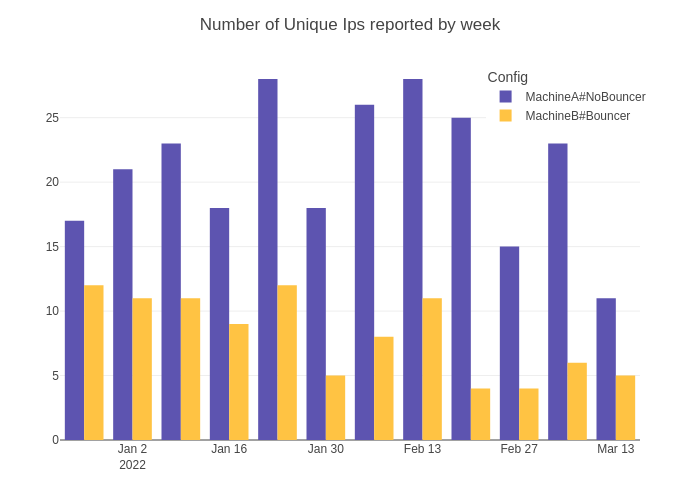
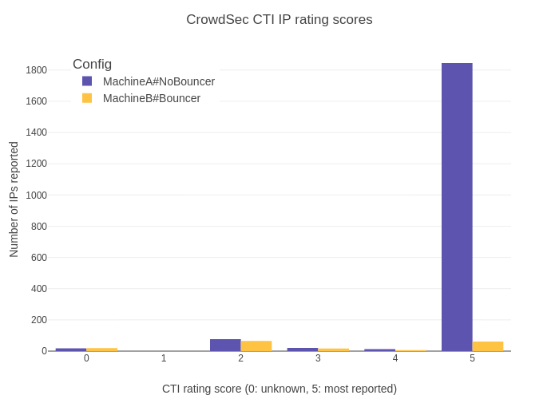
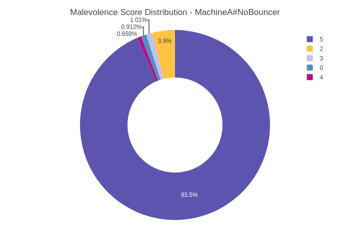
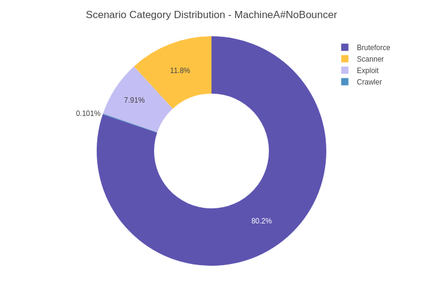
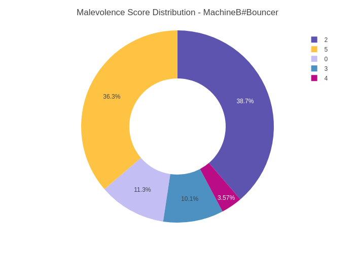
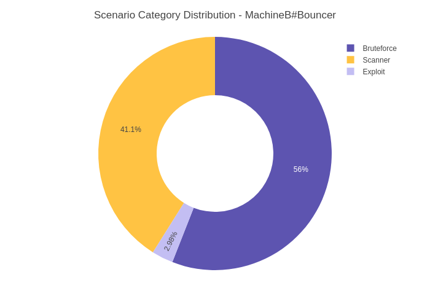

| ips_reported | n_alerts | |
|---|---|---|
| Config | ||
| MachineA#NoBouncer | 149 | 1973 |
| MachineB#Bouncer | 91 | 168 |
Twin Machines
Load data
Data Description
| column | dtype | description | Sample |
|---|---|---|---|
| date | datetime64[ns] | Date of the report | 2022-01-08 0:00:00 |
| version_number | object | CrowdSec version number | v1.2.2 |
| scenario | object | Name of the crowdsec scenario | crowdsecurity/ssh-slow-bf |
| watcher_id | Int64 | id of the watcher installation | 111566 |
| ip | object | Reported IP | 31.184.198.71 |
| id | Int64 | Reported IP ID | 153806 |
| rdns | object | RDNS for the Reported IP | nan |
| country | object | Country for the Reported IP | RU |
| as_num | Int64 | AS Nunber for the Reported IP | 34665 |
| as_name | object | Autonomous System Organization Name | Petersburg Internet Network ltd. |
| Config | object | Type of the machine in the article | MachineA#NoBouncer |
| scenario_category | object | High-level category for each scenario | Bruteforce |
| malevolence_score | int64 | Malevolence score for the reported IP graded by the CrowdSec API | 5 |
EDA
Number of alerts and IPs
Number of Average Alerts per Day
| average_alerts_per_day | |
|---|---|
| Config | |
| MachineA#NoBouncer | 24.974684 |
| MachineB#Bouncer | 3.294118 |
Average NUmber of Alerts per IPs
| average_alerts_per_ip | |
|---|---|
| Config | |
| MachineA#NoBouncer | 13.241611 |
| MachineB#Bouncer | 1.846154 |
Viz
Plotly config (optional)
Viz routines
Number of Unique IPs reported

Alerts


Scenario distribution and IP Score



